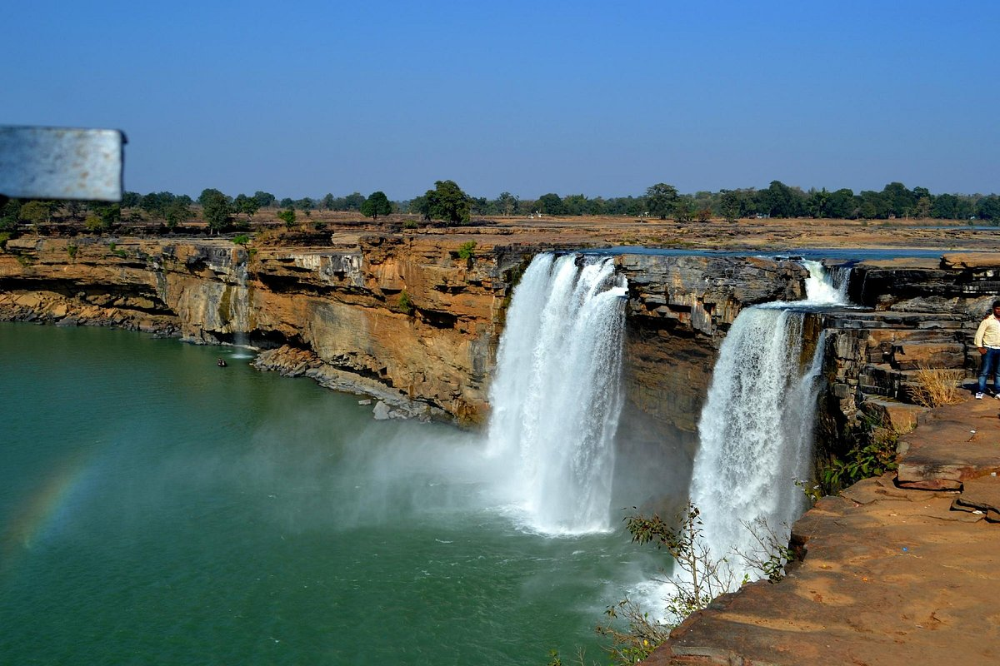

Chhattisgarh
"Full of Surprises"
Quick Facts
Popular Tourist Attractions
Chitrakote Falls
India's Niagara, a magnificent waterfall in Bastar district.
Bhoramdeo Temple
Ancient temple known as the Khajuraho of Chhattisgarh.
Kanger Valley
Lush national park with caves, waterfalls, and wildlife.
Nature & Wildlife
Chhattisgarh's forests host tigers, leopards, deer, and rare birds. Notable parks include Achanakmar and Udanti-Sitanadi.
Famous Personalities
- Abhishek Singh: Politician and Member of Parliament.
- Teejan Bai: Renowned Pandavani folk singer.
- Phoolbasan Bai Yadav: Social activist and Padma Shri awardee.
Local Handicrafts
Known for Dhokra metal crafts, bell metal art, Kosa silk weaving, and terracotta items reflecting tribal creativity.
Climate
Chhattisgarh has a tropical climate — hot summers, monsoon rainfall, and mild winters.
Culture & Festivals
Festivals
Bastar Dussehra is a unique 75-day tribal celebration.
Dance & Music
Panthi, Raut Nacha and Karma dances showcase tribal spirit.

Cuisine
Typical dishes include Chana Samosa, Faraa, and Angakar Roti.
Clothing
Tribal sarees with natural dyes and silver jewelry dominate.
Did You Know? Chhattisgarh produces 15% of India’s total steel and is rich in coal and iron reserves.
Note: Information may be subject to updates. Kindly notify us of any discrepancies.